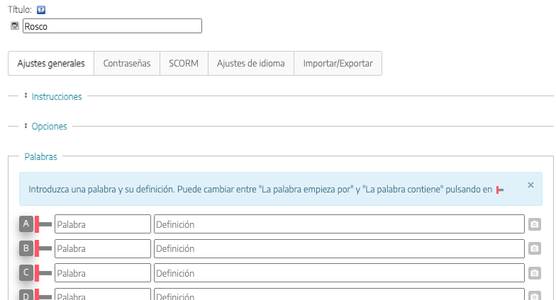
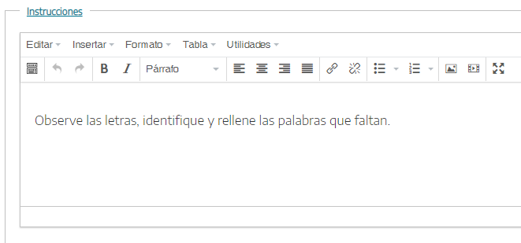
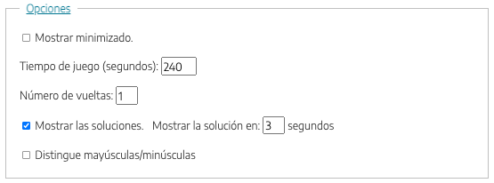
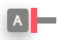
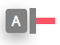
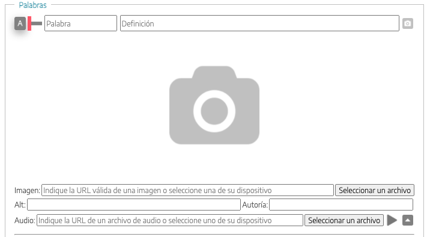

Utilizaremos este iDevice para crear una actividad o juego en la que dada la definición de una palabra, se solicite a nuestro alumnado la propia palabra que comienza o contiene la letra que se señala en el rosco. Se podrá acompañar a la definición o pista con imágenes para facilitar así que el alumnado responda correctamente.
Al seleccionar el iDevice "Rosco" del listado de iDevices se nos mostrará lo siguiente en nuestro eXeLearning:

En la parte superior, tendremos la posibilidad de modificar el título del iDevice y asignar un icono. Por último, tendremos la opción de incluir un contenido posterior.
Vemos que existen una serie de pestañas, cada una con una funcionalidad diferente que nos permitirá configurar nuestro juego de una manera muy flexible (estas pestañas solo aparecerán con el Modo avanzado activado).
Ajustes Generales
La pestaña "Ajustes Generales" es la que se muestra por defecto al crear el iDevice Rosco.
En esta pestaña definiremos las actividades propuestas en el iDevice, instrucciones para realizar el juego, las diferentes configuraciones y opciones y las definiciones de las palabras o expresiones que deben conocer nuestro alumnado.
- Al hacer clic sobre el enlace "Instrucciones" se abrirá un cuadro de texto en donde podremos enunciar las instrucciones a seguir.
- Al hacer clic sobre el enlace de "Opciones" podremos configurar desde el tiempo como máximo que damos a nuestro alumnado para realizar el juego, el número de vueltas al rosco, mostrar las soluciones en cada pregunta o si queremos minimizar el iDevice.

- En el enlace "Palabras" tendremos la opción de escribir las palabras y su definición. Con el icono  se solicitará la palabra que hemos definido que empieza por la letra (A, en este caso). Podremos preguntar a partir de la definición, alguna palabra que contenga la letra de la fila en la que estamos haciendo clic sobre el icono .De igual forma, podremos incorporar una imagen que acompañen a cada palabra haciendo clic en el icono 
Contraseñas
En la pestaña "Contraseñas" podremos crear un itinerario de desafíos en el que los jugadores no podrán acceder a una nuevo juego o desafío hasta que consigan una clave en una actividad previa. Para esto, podremos establecer un código de acceso así como un mensaje que se mostrará a los jugadores cuando alcancen un porcentaje fijado de aciertos, y que podrán usar como contraseña para un nuevo desafío o una actividad posterior.

Ambos son opcionales, y su configuración aparecerá solo si los marcamos, como en la imagen.
SCORM
En la pestaña "SCORM" podremos determinar si queremos guardar los resultados obtenidos por nuestro alumnado y en qué condiciones queremos hacerlo cuando exportemos nuestros contenidos.


Hay que tener en cuenta que esta opción de guardado solo estará disponible para exportaciones SCORM y cuando publiquemos nuestros contenidos en plataformas como Moodle u otras plataformas LMS compatibles con SCORM.
Ajustes de idioma
Pestaña en donde podremos personalizar los textos y mensajes automáticos que genera el iDevice.
Importar/Exportar
En la pestaña "Importar/Exportar" podremos exportar el contenido del juego para usarlo después en otro iDevice del mismo tipo.

También podremos usar el juego en la aplicación QuExt de igual forma que podremos importar actividades de QuExt y usarlas en contenidos de eXeLearning.
{kind=link}
{kind=link}
{kind=link}